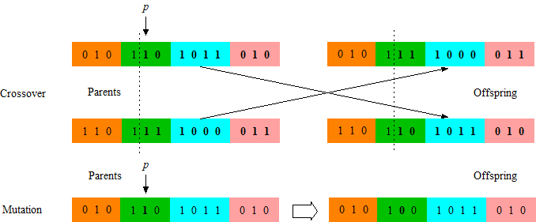

O que são Algoritmos Genéticos?
Algoritmos Genéticos (AGs) são métodos de otimização baseados na teoria da evolução de Charles Darwin. Eles trabalham com uma população de soluções candidatas, que evoluem ao longo de gerações até encontrar a melhor solução para um determinado problema.
Como Funcionam?
O processo começa com a criação de uma população inicial de soluções geradas aleatoriamente. Cada solução é chamada de indivíduo e é representada por uma sequência de dados, geralmente binária. A cada geração, os melhores indivíduos são selecionados para se reproduzir, gerando novos indivíduos por meio de cruzamento e mutação.
As etapas principais de um Algoritmo Genético são:
- Inicialização da população
- Avaliação de aptidão (fitness)
- Seleção dos melhores indivíduos
- Cruzamento (crossover)
- Mutação
- Nova geração

Aplicações
Os Algoritmos Genéticos são utilizados em diversas áreas da computação e ciência. Na inteligência artificial, são usados para treinar redes neurais e otimizar modelos. Na engenharia, auxiliam no design de estruturas e circuitos. Na medicina, ajudam na descoberta de medicamentos e análise genômica. Em jogos, são utilizados para criar personagens com comportamento adaptativo.
Vantagens e Limitações
Entre as vantagens, destaca-se a capacidade de encontrar boas soluções em problemas muito complexos onde métodos tradicionais falham. Porém, os Algoritmos Genéticos não garantem encontrar a solução perfeita, e podem ser lentos dependendo do tamanho da população e do número de gerações necessárias.
Tabela de Conceitos
| Conceito Biológico | Conceito Computacional |
|---|---|
| Indivíduo | Solução candidata |
| Cromossomo | Representação da solução |
| Gene | Parâmetro da solução |
| Seleção natural | Seleção dos melhores resultados |
| Cruzamento | Combinação de soluções |
| Mutação | Alteração aleatória de parâmetros |
| Total de conceitos | 6 pares mapeados |